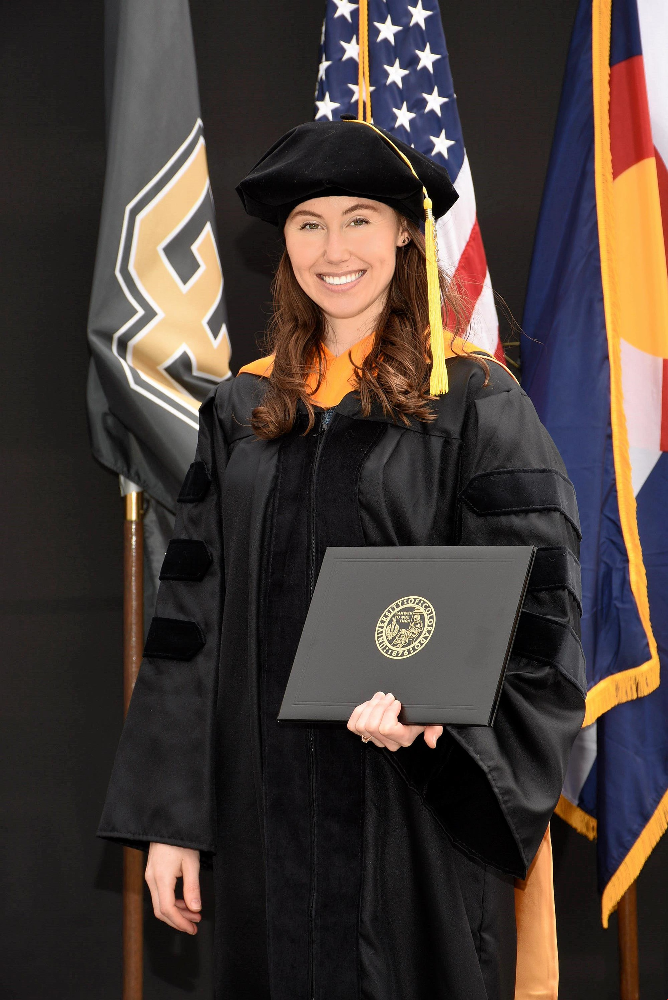

Hello and welcome to my homepage! If you are new here, please allow me to introduce myself. I am a postdoctoral fellow at the Massachusetts Institute of Technology with Professor Leigh Royden. I recently defended my PhD in Geophysics at the University of Colorado Boulder, where I studied with Professor Shijie Zhong. I specialize in computational geodynamics and took a particular interest in lithospheric dynamics and viscoelastic rheology in my dissertation. The fundamental question that motivated my dissertation is: what is the nature of the lithospheric rheology that gives rise to the unique tectonics style of Earth? More recently, I have been exploring analytic techniques to study the dynamics and structure of Earth's lower mantle. I am particularly interested in making connections with scientists of similar and dissimilar expertise, so I encourage you to reach out if you see potential for us to collaborate!
